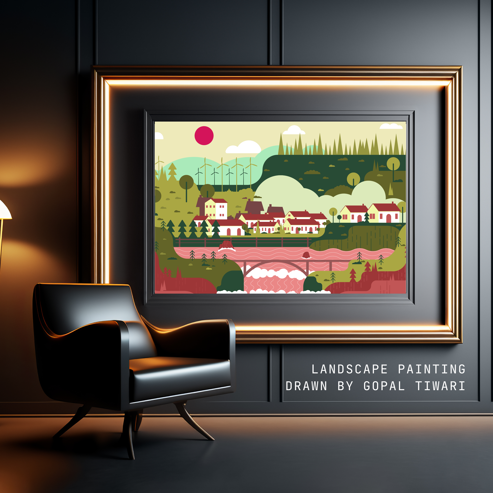

Gopal Tiwari
WEB DEVELOPER & DESIGNER
WEB DEVELOPER & DESIGNER
A peaceful vector landscape representing a natural environment filled with hills, forests, houses, bridges, rivers, and windmills, combined into a beautifully balanced scenic composition.

This artwork is a vector landscape scenery illustration created in Adobe Illustrator. The design represents a peaceful natural environment containing hills, forests, houses, bridges, rivers, and windmills combined into a balanced scenic composition.
The artwork was later presented inside a realistic frame mockup setup to give it a professional presentation appearance, making the illustration look like a real wall painting display.
The main purpose of creating this scenery artwork was to improve my understanding of landscape composition, vector environment design, and color harmony.
This project specifically helped me practice:
One of the biggest highlights of this artwork is that almost every object in the scenery was manually created using the Pen Tool.
The trees, mountains, river flow, bridge structure, houses, clouds, and landscape elements were carefully designed with precise vector paths and anchor points.
Working extensively on this environment illustration improved my:
This artwork became a strong practice project for mastering one of the most important tools in vector design.
Creating a complete environment scene from scratch required intense patience, observation, and strong control over vector tools.
Since the artwork contains many elements (hills, forests, houses, rivers), balancing the placement of each object was difficult. Proper spacing was needed to keep it visually attractive.
Designing natural objects like trees, clouds, and water waves required incredibly smooth curves. Managing anchor points perfectly was time-consuming and required extreme patience.
To make the scenery look deep and realistic, multiple overlapping layers and color tones were required. Separating the foreground perfectly from the background was challenging.
After finishing the vector art, presenting it inside a realistic frame mockup required careful lighting balance, perspective shifts, and shadow adjustments for a professional display.
This scenery artwork represents peace, balance, and creativity through nature-inspired vector design. The combination of forests, flowing rivers, houses, and open landscapes creates a calm and visually relaxing atmosphere.
More importantly, this project represents a significant milestone in my design journey, challenging me to build a complete scenic environment entirely from scratch.
Conclusion
This artwork is not just a scenery illustration — it reflects my creativity, patience, and technical growth as a designer. From manually creating every tiny vector shape to presenting the final artwork inside a realistic mockup, the entire process was a highly valuable learning experience. It pushed me to focus on perfection, detailing, and professional presentation quality.